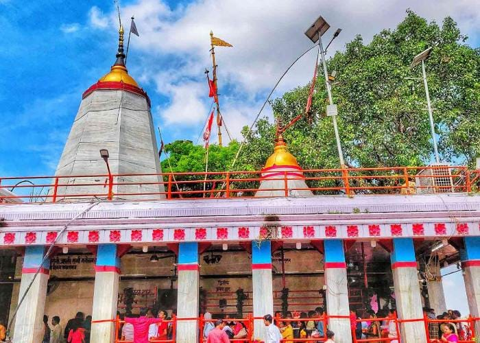
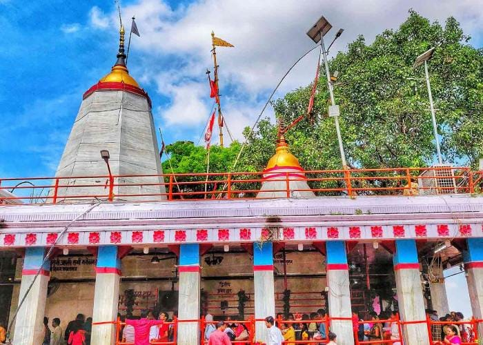
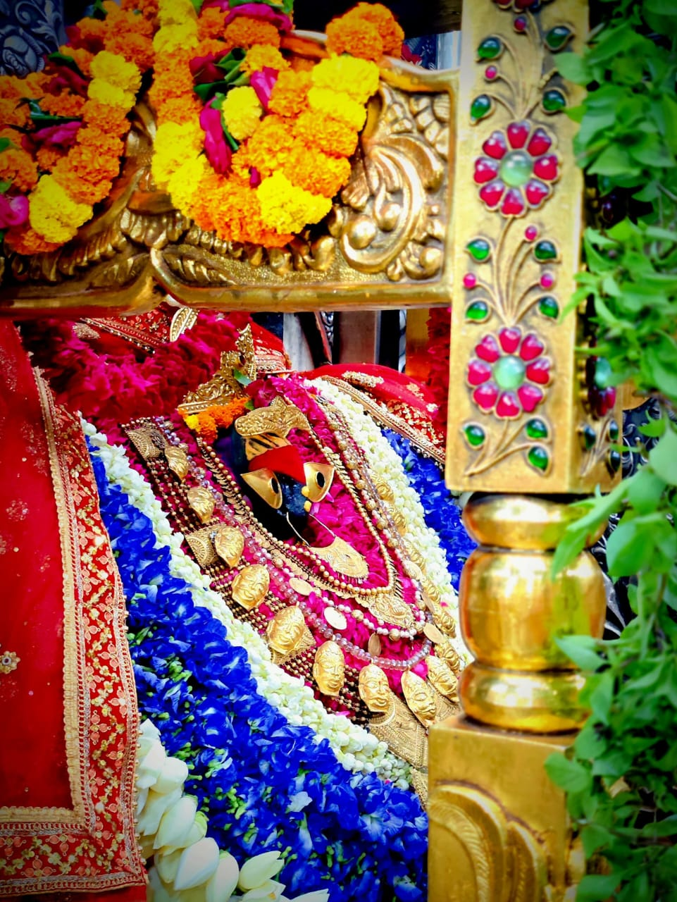
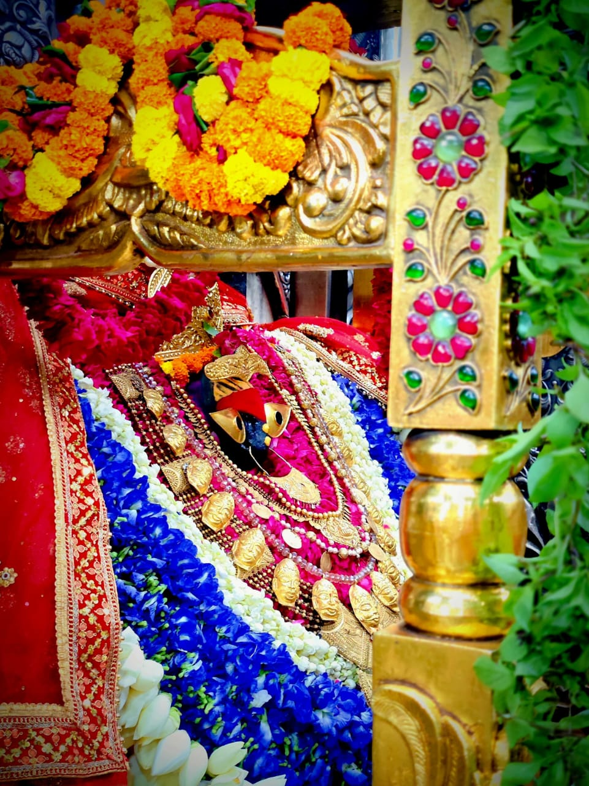
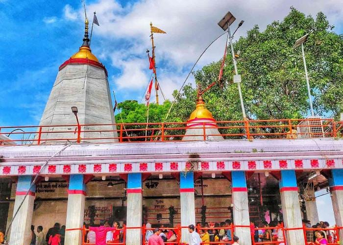
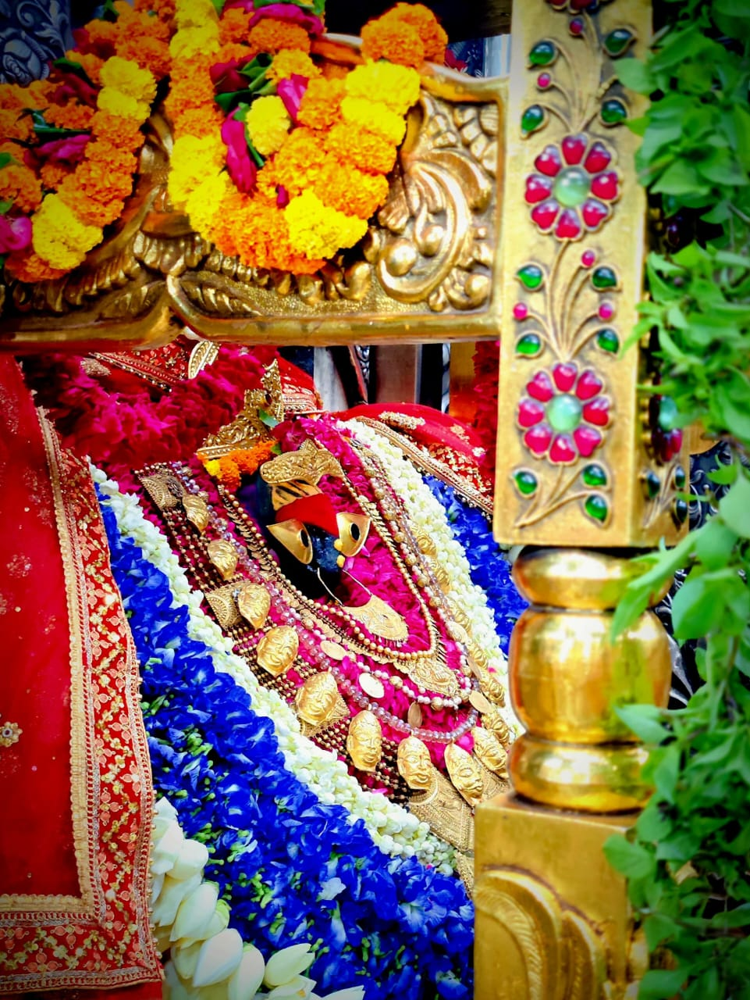

Gallery
 

 



माँ विंध्यवासिनी के पावन धाम में आपका स्वागत है
माँ विंध्यवासिनी एक ऐसी जागृत सिद्ध पीठ है जिसका अस्तित्व सृष्टि के प्रारंभ होने से पूर्व और प्रलय के बाद भी रहेगा. माँ विंध्यवासिनी का स्थान जहां विंध्य पर्वत और गंगा का संगम होता है उसी संगम पर स्थित है। यहां पराम्बा भगवती के तीन रूप के दर्शन करने का सौभाग्य प्राप्त होता है—त्रिकोण यंत्र पर स्थित विंध्याचल निवासिनी माँ भगवती के तीन रूप: 01. महाकाली, 02. महालक्ष्मी, 03. महासरस्वती के रूप में तीनों कोणों पर विराजमान हैं। माँ विंध्यवासिनी का वर्णन पद्मपुराण, मार्कंडेय पुराण, दुर्गा सप्तशती, श्रीमद् भागवत, महाभारत, श्रीमद् देवी भागवत जैसे अनेक ग्रंथों, पुराणों और वेदों में मिलता है। माँ के स्थान को सिद्ध पीठ के साथ-साथ मणिदीप भी कहा जाता है।
माँ विंध्यवासिनी के दरबार में बड़ी संख्या में लोग अपने वंशज (संतान) का पीढ़ी दर पीढ़ी मुंडन संस्कार कराने आते हैं। इनमें मनौती संकल्पों के पूर्ण होने पर संतान प्राप्ति होने पर लोग अपने संतान का मुंडन संस्कार माँ के दरबार में आकर करते हैं। इसके लिए किसी विशेष मुहूर्त की आवश्यकता नहीं होती। पर्वों के दौरान यह संख्या हज़ारों में पहुँचती है और विशाल मुंडन स्थल बनाया गया है।
इसी प्रकार उपनयन (जनेऊ) संस्कार भी माँ के दरबार में कराया जाता है। यह संस्कार भी पीढ़ी दर पीढ़ी संपन्न होता है। इसके लिए विशाल मंडप है जहाँ तीर्थ पुरोहितों द्वारा यह संपन्न कराया जाता है। मुंडन, उपनयन या विशेष पूजन कराने पर माँ की विशेष कृपा संतान पर होती है।
माँ विंध्यवासिनी भगवती का सिंगार (आरती) 24 घंटे में 4 बार होता है:
भक्त यहाँ के तीर्थ पुरोहितों के माध्यम से माँ का सिंगार या विशेष पूजन करा सकते हैं। धार्मिक यज्ञ, अनुष्ठान, सिंगार कार्य कोई भी भक्त अपनी कामना पूर्ति हेतु करा सकता है।
नोट: आप माँ विंध्यवासिनी धाम में किसी भी शुभ कार्य या जानकारी के लिए संपर्क कर सकते हैं: रघुवीर मिश्रा (तीर्थ पुरोहित), मोबाइल: 9044348414 | गूगल मैप
माँ भगवती का स्थान सकारात्मक ऊर्जा का केंद्र है जिसे मणिदीप भी कहते हैं। यहाँ श्री श्री रविशंकर, देवरहा बाबा, नेपाली बाबा जैसे अनेक संतों ने साधना की है। वैदिक, तांत्रिक या शाबर किसी भी मार्ग के साधक यहाँ सिद्धि प्राप्त करते हैं। माँ का दरबार तंत्र-मंत्र का एक प्रमुख केंद्र है।
माँ विंध्यवासिनी मंदिर से कुछ दूरी पर बना टाइम ज़ोन केंद्र भारत के मानक समय निर्धारण का स्थल है। रावण इसे पृथ्वी का मध्य मानता था। विंध्य महादेव मंदिर को वह बिंदु मानता था और माँ को बिंदुवासिनी कहता था। यह स्थान रहस्यमयी ऊर्जा से भरपूर है, जहाँ से नकारात्मक ऊर्जा दूर होती है।
माँ का दरबार वाराणसी से 70 किमी और प्रयागराज से 90 किमी दूर है। यहाँ सड़क (रोडवेज), रेलवे (विंध्याचल स्टेशन) और हवाई मार्ग (बाबतपुर एयरपोर्ट) से आसानी से पहुँचा जा सकता है। आसपास गुफाएँ, तालाब, झरने, नौका विहार और आश्रम जैसे स्थल भी दर्शनीय हैं।
नोट: यदि आपको मार्गदर्शन या कोई जानकारी चाहिए तो संपर्क करें: रघुवीर मिश्रा, तीर्थ पुरोहित – 9044348414
जय माँ विंध्यवासिनी 🙏


मैं पुजारी माँ विंध्यवासिनी मंदिर, किसी पूजन, श्रृंगार, अनुष्ठान और मार्गदर्शन हेतु संपर्क करें:
रघुवीर मिश्रा पुजारी माँ विंध्यवासिनी मंदिर, 9044348414